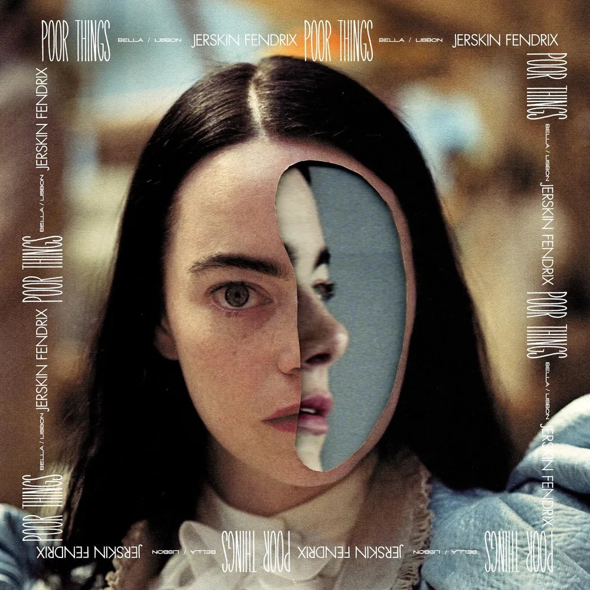

Poor Things

看完〈弒聖鹿〉時候心想：巧言令色鮮矣仁，藝高膽大真缺德。
石艾瑪是優秀的泥土，在拉拉地遇上過度自信的陶匠 (以及令人難受的 overhype)，終於在 Lanthimos 手裏質變為刺身。除了聖鹿裡的庫柏力克與漢內克， Lanthimos 再次援古論今，雪萊筆下當代盜火者的受造物，脫胎成另一個樣貌，跟 94 年的鄔瑪舒曼對尬，自由意志、神與自然，更低俗也更壯麗，流量只是附帶價值。
音樂也令人激賞。 Lanthimos 已經展示過聲音如何能將影像提煉出另一個維度（例如找 Rättyä 演奏 Gubaidulina 地鳴），是博雜品味的前科犯，聲音的軟裝師。 Jerskin Fendrix 的伯樂，企圖心不為現成物所滿足，給看戲的人獻了個新鮮小禮。
美術太美， Mark Ruffalo 不會演戲、中幕嚴重漏譯，都不影響整場觀戲的精緻體驗。